Overview
This protocol draws heavily (and almost exclusively!) from the awesome method paper, “Its What’s on the Inside That Counts: An Effective, Efficient, and Streamlined Method for Quantification of Octocoral Symbiodiniaceae and Chlorophyll” published by Rosemary Kate Steinberg, Emma L. Johnston, Teresa Bednarek, Katherine A. Dafforn and Tracy D. Ainsworth. (Steinberg et al. 2021)
THANK YOU to all the above listed authors for this amazingly clear methods paper. It is pure gold, and I wish more science was actually reproducible like this is.
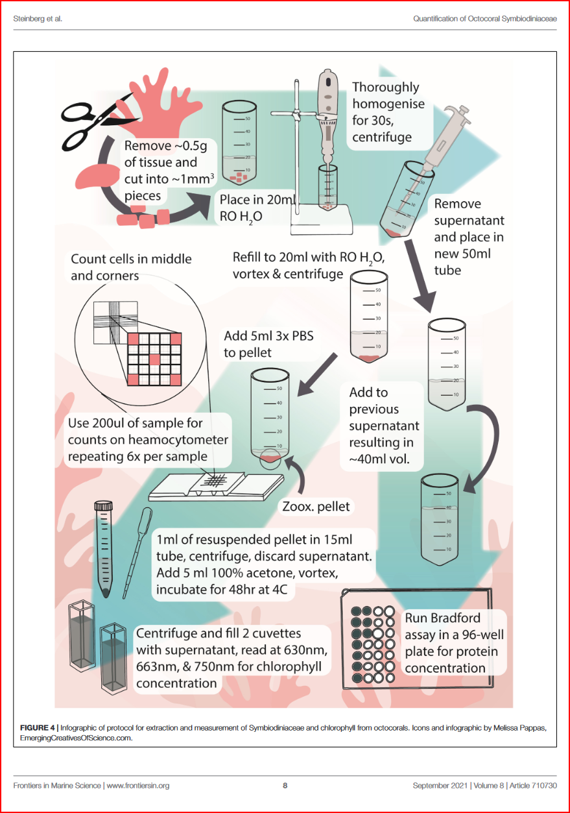
Here I detail out the method I aim to use for extracting and measuring chlorophyll a and c2 of the Anthopleura elegantissima brown algal symbiont, Breviolum muscatinei, relative to cnidarian host wet weight and calculated protein content.
What is chlorophyll a and c2?
- Chlorophyll
a
c2
What about other pigments?
- Xanthophylls : photoprotective xanthophyll cycle
peridinin
fucoxanthin
diadinoxanthin (Dn)
diatoxanthin (Dt)
dinoxanthin & alteration product diadinochrome
phaeophytin a
- Carotenoids
peridinin? Ambarsari et al 1997
Dn? Ambarsari et al 1997
B carotene
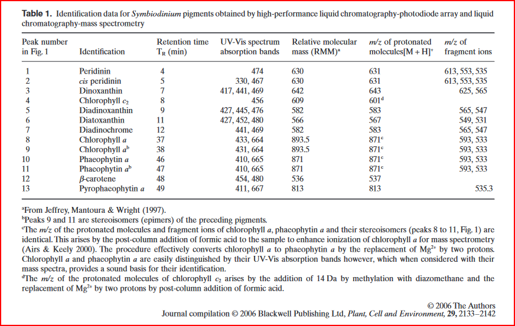
“Ambarsari et al. (1997) and Brown et al. (1999) obtained evidence of a functional xanthophyll cycle in Symbiodinium, thought to operate as part of non-photochemical quenching (NPQ), also observed in other marine algae (Demers et al. 1991), and analogous to the photoprotective xanthophylls cycle in terrestrial plants.” (Venn et al., 2006, p. 2134)
“Xanthophyll cycling is likely to be one of several mechanisms that underpin the environmental tolerance of a coral–algal symbiosis. Symbiotic dinoflagellates, unlike free-living marine algae, exist in coral tissue equipped with additional photoprotective and thermoprotective mechanisms, for example, fluorescent proteins (Dove 2004) and heat shock proteins (Black, Voellmy & Szmant 1995), which may complement or even surpass photoprotective mechanisms linked to the algal pigment profile and thus help maintain the integrity of the symbiosis (Brown et al. 2002a).” (Venn et al., 2006, p. 2140
Why is chlorophyll content an important metric if we’ve already used the pulse-amplitude modulated (PAM) fluorometer to measure photosynthetic efficiency, quantum yield, etc.?
Materials list
Lab equipment
- tissue homogenizer (like the OMNI TH used by (Steinberg et al. 2021) with a 10mm stainless steel bit, we have a Biospec Products Tissue Tearor Model 985-370, which is a slightly older model compared to this here)
- vortex
- centrifuge
- NanoDrop 2000c Spectrophotometer
- 2 quartz-glass Nanodrop Spec cuvettes
- Neubauer Improved Heamocytometer
- Microscope or Dissecting scope
Lab consumables
- microcentrifuge tubes
- pipettes & tips
- nitrile gloves
- ethanol-proof lab markers
Chemicals & solvents
- Milli-Q Water
- 10x Phosphate-Buffered Saline (PBS) (room temp storage)
- 100% Acetone
Objectives
From these samples we already have1:
1 We also technically have respirometry data for oxygen consumption and production, however the duration of the respirometry run was not sufficiently long to
- wet weight
- calculated protein content
- PAM Rapid Light Curve data
Our overarching goals with these samples are to potentially get the following from each sample:
- Microbial DNA
- Symbiont RNA
- Anemone RNA
- Host protein content
- Symbiont counts
- Chlorophyll a & c2 content
Confirm that the wet weight range of the samples is within 0.17g to 0.75g
“… the method developed here requires very small sample sizes but can be used successfully for a range of weights (0.17–0.75 g wet weight)”(Steinberg et al. 2021)
Steinberg, Rosemary Kate, Emma L. Johnston, Teresa Bednarek, Katherine A. Dafforn, and Tracy D. Ainsworth. 2021. “Its What’s on the Inside That Counts: An Effective, Efficient, and Streamlined Method for Quantification of Octocoral Symbiodiniaceae and Chlorophyll.” Frontiers in Marine Science 8 (September). https://doi.org/10.3389/fmars.2021.710730.
Procedure
Separate symbiont & protein fractions
- top off each frozen sample tube with
Ultrapure water/DNA/RNA Shield - thaw on ice until able to remove from tube
- remove and cut 2 small amounts of tissue
- place one of the tissue cuts in 2mL microcentrifuge tube Cat No. 02-682-004 (the kind with a blunted or rounded bottom so the homogenizer bit tip can get all the way down) and add 500uL of Ultrapure or RO water
- place the other tissue cut in a nuclease free tube and add 500uL of DNA/RNA Sheild
- homogenize each tube using a tissue-tearor for 30 seconds. Sterilize the tissue-tearor between each tube. Try finding the homogenizer teflon thing…
- centrifuge at 2002 xg for 2 minutes
- remove supernatent with pipette3 & save in separate labelled 2mL tube4
- refill symbiont pellet tube with 1mL
Ultrapure water/DNA/RNA Shield - vortex to re-suspend symbiont cells
- genomics tubes can be frozen at -20C in RNAlater or DNA/RNA Shield until ready to be extracted
- for the chlorophyll content/mitotic index tubes, centrifuge at 200 xg for 2 minutes
- remove supernatent with pipette, add to previously separated (protein) tube
- top off symbiont pellet with 1ml of 3X5 Phosphate-Buffered Saline (PBS)
- you may freeze both the symbiont and supernatent (aka anemone tissue/protein) tubes until ready to use downstream in DNA/RNA extraction, protein quantification, symbiont counts and mitotic index, and chlorophyll quantification.
2 Low and slow.. I tried it at much higher (16,110xg) and the pellet caked up really tight, making it hard to re-suspend the symbionts. It also did draw the protein down into a top layer above the symbiont pellet rather than left suspended in the supernatent
3 The pellet is not very stable and therefore the supernatent must be carefully pipetted out instead of poured so as not to disturb the symbiont cell ‘pellet’ that is formed at the bottom of the tube
4 This tube is for running a protein assay!
5 How to prepare 100mL of 3X PBS from 10X PBS stock solution: \[
C_{1}V_{1} = C_{2}V_{2}
\] \[
10xPBS \cdot V_{1} = 3xPBS \cdot 100mL
\] \[
V_{1} = \frac{3xPBS \cdot 100mL}{10xPBS}
\] \[
V_{1} = \frac{300}{10} = 30mL
\] Therefore \(30mL\) of 10xPBS added to \(70mL\) of Milli-Q Water will give a final concentration of 3xPBS in a final volume of \(100mL\).
Protein quantification
- defrost supernatent (protein tube)
- top up with RO water to standard volume
- quantify protein against a bovine albumin standard using the Thermo Scientific Coomasie Plus (Bradford) kit and protocol
- take all spectrophotometer measurements at \(595nm\)
- report units in \(\mu g/mL\)
Symbiont counts
- remove 500uL to a new 2mL microcentrifuge tube
- Add 1mL of 3X PBS
- vortex to resuspend
- pipette out \(200 \mu L\) subsample, and place on a Neubauer Improved heamocytometer
- place the heamocytometer slide on a microscope, focus & photograph6
- repeat 6 times per sample! Oof… I need an undergrad for this.
6“For ease and speed of counting, if there were more than 30 cells per square in the test sample, the entire treatment was diluted in separate Eppendorf tubes by either mixing 500 μl Symbiodiniaceae with 500 μl 3× PBS (2× dilution) or 250 μl Symbiodiniaceae with 750 μl of 3× PBS (4× dilution).” (Steinberg et al., 2021, p. 3)
“The final count was then multiplied by the dilution to attain correct counts. Each haemocytometer fill was considered a technical replicate, while the squares counted within the grid were considered a sub-replicate. Six technical replicates and 5 sub-replicates per technical replicate were performed, for a total of 30 replicates. Replicate numbers were chosen based on previous work in stony and octocorals and anemones (Brown et al., 1995; Hueerkamp et al., 2001; Hill and Scott, 2012; Hill et al., 2014; Pupier et al., 2018; Gierz et al., 2020).” (Steinberg et al., 2021, p. 3)
“The number of Symbiodiniaceae cells was standardized to the total protein concentration of the supernatant. The dilution factor (DF) of the supernatant compared to the resuspended Symbiodiniaceae pellet must be considered when calculating Symbiodiniaceae concentrations. In this study, the supernatant had a volume of 40 ml and the resuspended Symbiodiniaceae had a volume of 5 ml, and as such the DF was 8. Symbiodiniaceae per ml was calculated using the following formula: count ×dilution 6.25 ×10−6 , where 6.25 × 10−6 is the volume of one haemocytometer grid square. Symbiodiniaceae per μg protein was calculated using the following formula: Symbiodiniceae ml DF ×protein( μg ml ) or count ×dilution 6.25 ×10−6 DF ×protein ( μg ml ).” (Steinberg et al., 2021, p. 3)
Chlorophyll extraction
- vortex the remaining contents of the Chlorophyll tube to re-suspend the symbionts
- centrifuge for 10 minutes at 800 xg
- remove supernatent & discard
- add 5mL of 100% acetone
- vortex to re-suspend symbiont pellet
- incubate tubes in the dark at \(4^{\circ}C\) for 48 hours7
7 In the paper Steinberg et al., 2021, they compared a 24hr and a 48hr Chlorophyll extraction incubation period… they found that 24hrs was perfectly fine for Chl-a extraction, but that 48hrs was better for Chl-c2 extraction. See Figure 3. from the paper below!
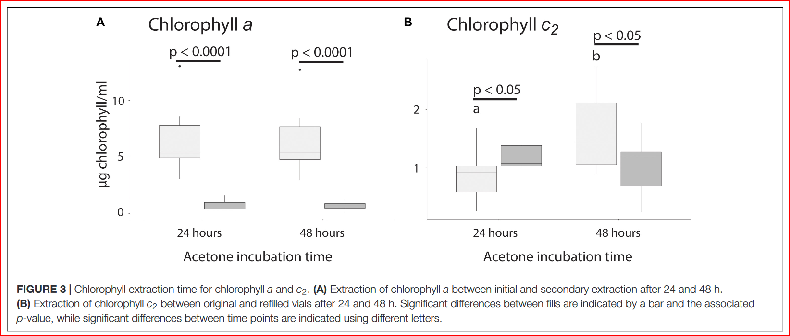
Measure absorbance using a NanoDrop 2000c Spectrophotometer
Program NanoDrop 2000c Method Editor
I emailed8 Thermo Fisher for some advice on this procedure and got the following instructions:
8 Hello Sarah,
Thank you for your email. Please see link to below to a protocol that we have published for measuring chlorophyll on the NanoDrop One. It is important to note that the pre-defined custom method mentioned in the document is only compatible with the NanoDrop One, and not with the NanoDrop 2000.
quantify-chlorophyll-a-and-chlorophyll-b-with-custom-method-T141.pdf (thermofisher.com)
You can replicate the Custom Method on your NanoDrop 2000 by following the attached protocol and using the below guidelines in the “Method Editor” application:
Wavelength range Visible (350–850 nm)
Extinction coefficient 74.8 g/L
Analysis wavelength 666 nm
Correction for analysis wavelength 750 nm
Baseline correction 750 nm
Automated pathlength On
If you have any questions, please do not hesitate to contact me; it is my pleasure to assist you. I can best be reached by email at nanodrop@thermofisher.com, and typing Attention: Moira in the subject bar. If I am unavailable, any member of our Technical Support Team would be happy to assist you at 877-724-7690.
Best,
Moira Abbott
Technical Application Specialist II
Thermo Scientific NanoDrop Products
Thermo Fisher Scientific
3411 Silverside Road | Tatnall Building, Suite 100 | Wilmington, DE 19810
Tel: +1 (302) 479-7707 | Toll Free: +1 (877) 724-7690 ext. 2400109 | Fax: +1 (302) 792-7155
nanodrop@thermofisher.com | www.thermofisher.com/nanodrop
Follow procedure from the NanoDrop One, but note the following differences for accomplishing this on the NanoDrop 2000c:
- Open the NanoDrop 2000c desktop application
- Click on the “Method Editor” button
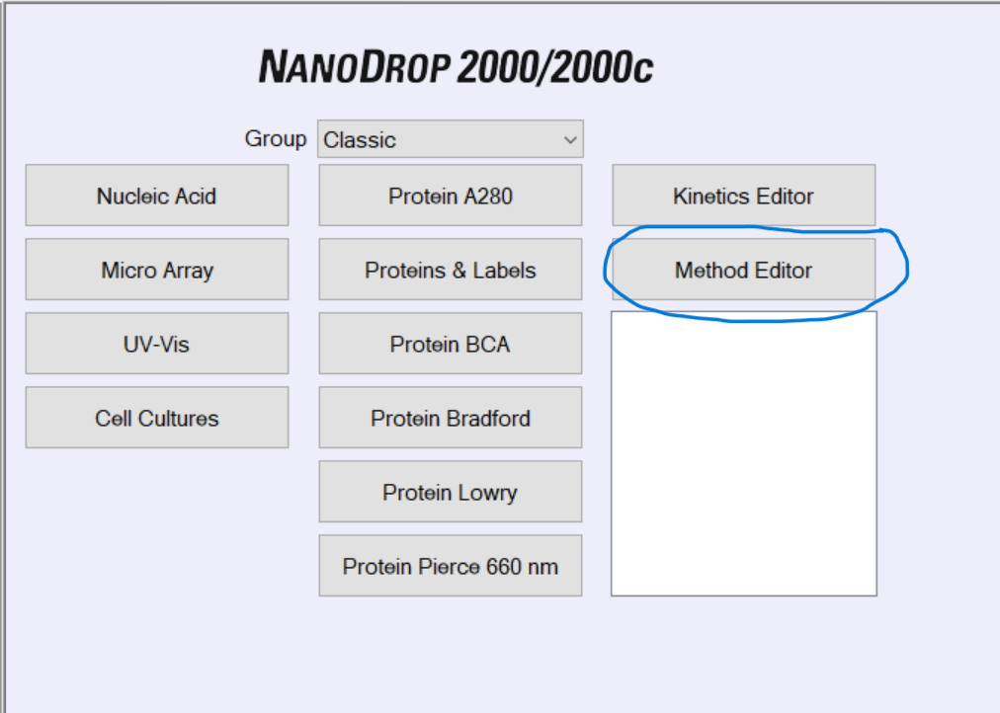
Name and describe the custom measurement method. Here, select
Manually enetered factor / extinction coefficientfor theMethod type. ClickNext.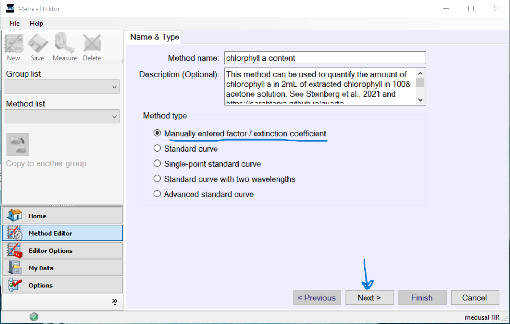In this window type in the analysis wavelength in nanometers (nm) that you want to measure. Here we want to measure 630, 663, and 750. We want the extinction coefficient to be from Jeffrey and Humphrey (1975) table 2:
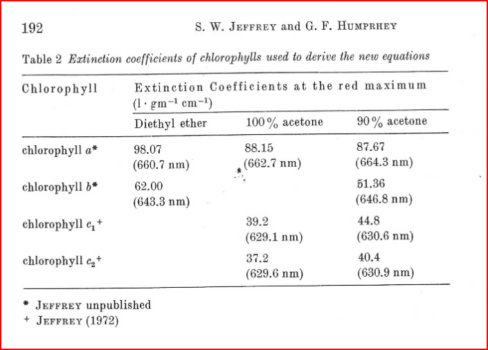
However, the extinction coefficients for 100% acetone are different for each type of chlorophyll… If I want to measure both chlorophyll a and c2, does this mean I need a different method for each one?
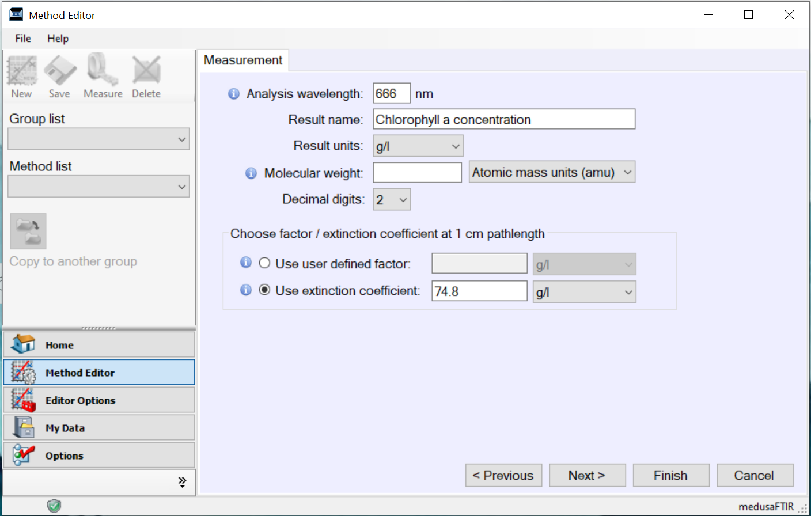
- Correction for analysis wavelength should be 750 nm and a baseline correction of 750 nm. Click
Next.
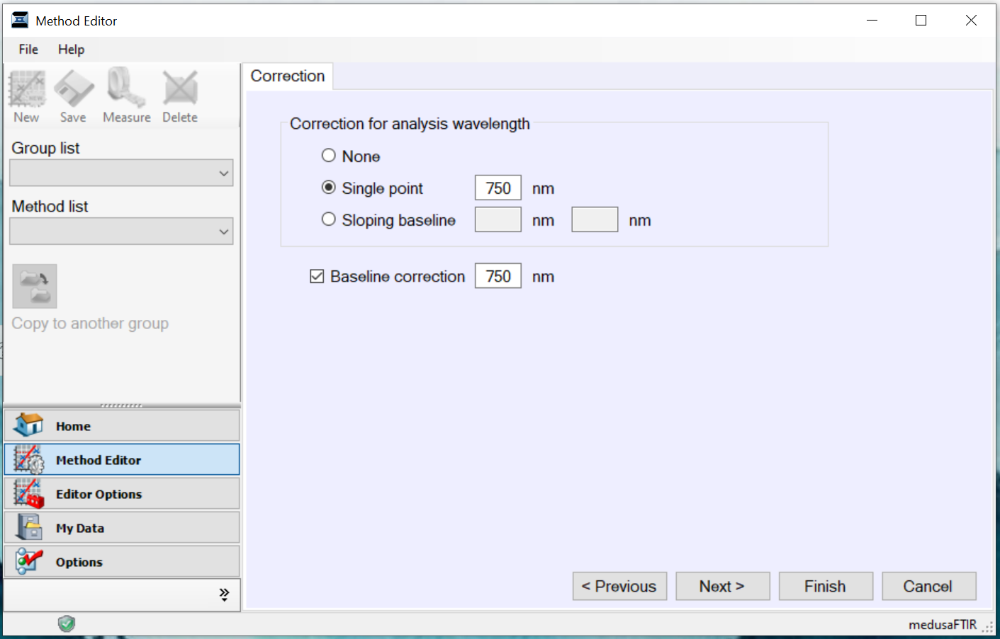
- Optionally enter a formula table. Here I just want to absorbance at each of the following wavelengths: 630, 663, and 750. Click
Next.
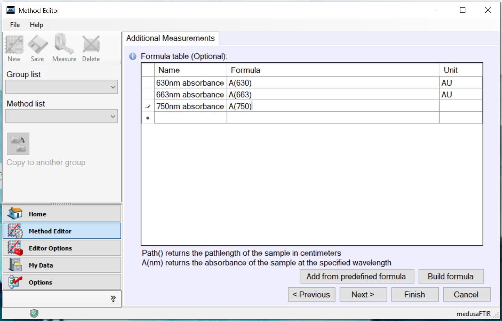
In instrument settings select the wavelength measurement range to Visible range (350nm- 840nm). Also check the box next to
Auto pathlengthindicating that it should be ‘On’. ClickFinish.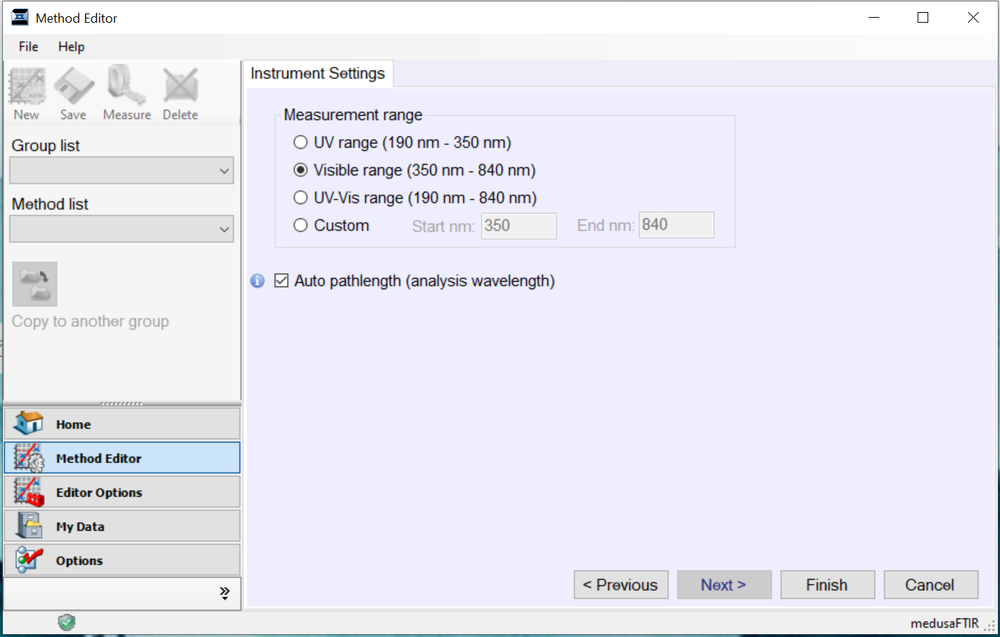
Load your blank cuvette…
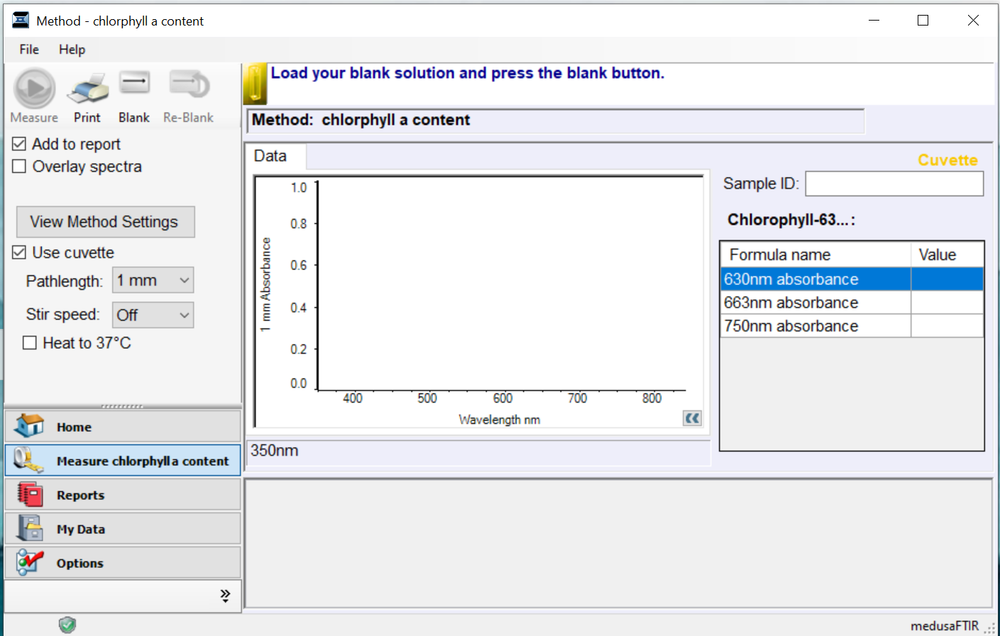
Measure cuvette blanks and samples
- after the 48hr incubation, pull tubes out of the 4C fridge and centrifuge for 10 minutes at 805 RCF
- transfer 2 2mL aliquots of extracted chlorophyll in acetone from each symbiont tube into two optical glass cuvettes
- measure absorbance at 630, 663, and 750nm using the NanoDrop cuvettes
Calculate concentrations
calculate concentrations of chlorophyll \(a\) and \(c_2\) in \(\mu g/mL\) using the following equations from (Jeffrey and Humphrey 1975) Jeffery and Humphrey (1975) for dinoflagellates:
\[ Chlorophyll a = 11.43E_{663} − 0.64E_{630} \] \[ Chlorophyll c2 = 27.09E_{630} − 3.63E_{663} \]
” As 1 ml of resuspended Symbiodiniaceae pellet was extracted in 5 ml of acetone, chlorophyll concentrations were multiplied by five. To calculate chlorophyll per μg protein, the following equation was used: 5 × chlorophyll ( μg ml ) 8 ×protein ( μg ml ).” (Steinberg et al., 2021, p. 4)